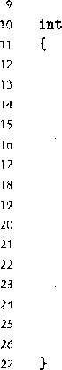

code/ecf/signalprobO. c
pid_t pid;
int counter = 2;
3
void handler1(int sig) {
counter = counter - 1;
printf("%d", counter);
fflush(stdout);
exit(0);
>
10
vi int mainO {
signal(SIGUSR1, handler1); %
13
printf ("°/ 0 d M , counter);
fflush(stdout);
16
'17 if ((pid = fork()) == 0) {
while(l) {>;
>
kill(pid, SIGUSR1);
waitpid(-1, NULL, 0);
counter = counter + 1;
printf("%d", counter);
exit(0);
>
code/ecf/signalprobO. c
8.5.5可移植的信号处理
不同系统之间，信号处理语义的差异（比如一个被中断的慢速系统调用是重启还是永久放弃) 是Unix信号处理的一个缺陷。为了处理这个问题，Posix标准定义了 sigaction函数，它允许像 Linux和Solaris这样与Posix兼容的系统上的用户，明确地指定他们想要的信号处理语义。
#include <signal.h>
int sigaction(int signum, struct sigaction *act,
struct sigaction *oldact);
返回：若成功则为 0, 若出错则为一 1 。
sigaction函数运用并不广泛，因为它要求用户设置多个结构条目。一个更、简洁的方 式，最初是由W.Richard Stevens提出的[109],就是定义一个包装函数，称为Signal,它调用 sigaction。图8-34给出了 Signal的定义,它的调用方式与signal函数的调用方式一样。 Signal包装函数设置了一个信号处理程序，其信号处理语义如下 ：
•只有这个处理程序当前正在处理的那种类型的信号被阻塞。
•和所有信号实现一样，信号不会排队等待。
•只要可能，被中断的系统调用会自动重启。
一旦设置了信号处理程序,它就会一直保持，直到Signal带着handler参数为SIG_ IGN或者SIGJDFL被调用。（一些比较老的Unix系统会在一个处理程序处理完一个信号 之后，将信号行为恢复为它的默认行为。）
code/src/csapp.c
handler_t *Signal(int signum, handler_t *handler)
{
struct sigaction action, old_action;
4
action.sa_handler = handler;
sigemptyset(ftaction.sa_mask); /* Block sigs of type being handled */
action. sa_flags = SA_RESTART; /* Restart syscalls if possible */
8
if (sigaction(signum, &action, &old_action) < 0)
unix_error("Signal error");
return (old_action.sa_handler);
>
code/src/csapp.c
图8-34 Signal ： sigaction的一个包装函数，它提供在Posix兼容系统上的可移植的信号处理
图8“35展示了图8-32中signal2程序的一个版本，该版本使用Signal包装函数在不 同的计算机系统上获得可预测的信号处理语义。唯一的区别是通过调用Signal而不是调用 signal来设置处理程序。现在，程序既可以在Solaris系统上也可以在Linux系统上正确运行 了，而我们也不再需要手动地重启被中断的read系统调用了。
8.5.6 显式地阻塞和取消阻塞信号
应用程序可以使用sigprocmask函数显式地阻塞和取消阻塞选择的信号：
#include <signal.h> |
||
int |
sigprocmask(int how, const sigset_t *set, sigset_t *oldset); |
|
int |
sigemptyset(sigset_t *set); |
|
int |
sigfillset(sigset_t *set); |
|
int |
sigaddset(sigset_t *set, int signum); |
|
int |
sigdelset(sigset_t *set, int signum); |
|
返回：如果成功则为 0, |
若出错则为一 1 。 |
|
int |
sigismember(const sigset^t *set, int signum); |
|
返回：若 signum 是 sef 的成员则为 1, 如果不是则为 0, |
若出错则为一 1 。 |
|
sigprocmask函数改变当前已阻塞信号的集合（8.5.1节中描述的blocked位向量)。具 体的行为依赖于how的值：
SIG_BLOCK :添加 set 中的信号到 blocked 中（blocked = blocked 丨 set)。
SIG__UNBLOCK ：从 blocked 中删除 set 中的信号（blocked = blocked & 〜set)。
SIG一SETMASK ： blocked = set。
如果oldset非空，blocked位向量以前的值会保存在oldset中。
可以使用下列函数操作像set这样的信号集合。sigemptyset初始化Set为空集。 sigfillset函数将每个信号添加到set中。sigaddset函数添加signum到set, sigdelset 从set中删除signum,如果signum是set的成员，那么sigismember返回1,否则返回0。 8.5.7 同步流以避免讨厌的并发错误
如何编写读写相同存储位置的并发流程序的问题，困扰着数代计算机科学家。一般而言，流 可能交错的数量是与指令的数量呈指数关系的。这些交错中的一些会产生正确的结果,而有些则 不会。基本的问题是以某种方式同步并发流，从而得到最大的可行的交错的集合，每个可行的交 错都能得到正确的结果。
code/ecf/signal4. c
6
7
9
10
11
12
13
14
15
16
17
18
19
21 22
23
24
25
26
27
28
29
30
31
32
33
34
35
36
37
38
39
40
41
#include "csapp.h" void handler2(int sig) pid_t pid;
while ((pid = waitpid(-l, NULL, 0)) > 0)
printf("Handler reaped child %d\n", (int)pid); if (errno != ECHILD)
unix_error("waitpid error");
Sleep(2); return;
}
int mainO
int i, n; char buf[MAXBUF]; pid_t pid;
Signal(SIGCHLD, handler2); / 6 sigaction error-handling wrapper */
/* Parent creates children */ for (i = 0; i < 3; i++) { pid = ForkO; if (pid == 0) {
printf("Hello from child %d\n", (int)getpid());
Sleep(1); exit(0);
>
>
/* Parent waits for terminal input and then processes it */ if ((n = read(STDIN_FILEN0, buf, sizeof(buf))) < 0) unix_error("read error");
printf("Parent processing input\n"); while (1) t
exit(0);
void handler(int sig)
- code/ecf/procmaskl . c
pid_t pid;
while ((pid = waitpid(-l, NULL, 0)) >0) /* Reap a zombie child 木 / deletejob(pid); /* Delete the child from the job list */ if (errno != ECHILD)

unix_error("waitpid error");
main(int argc, char **argv) int pid;
Signal(SIGCHLD, handler); initjobsO; /*■ Initialize the job list */.
while (1) {
卜 Child process */ if ((pid = ForkO) == 0) {
Execve("/bin/date", argv, NULL);
>
/* Parent process */
add j ob (pid) ; ./ * Add the child to the job list */
> ^ exit(0);
图8-37展示了消除图8-36中的竞争的一种方法。通过在调用fork之前，阻塞SIGCHLD 信号，然后在我们调用了 add job之后就取消阻塞这些信号，我们保证了在子进程被添加到作 业列表中之后回收该子进程。注意，子进程继承了它们父进程的被阻塞集合，所以我们必须在调 用execve之前，小心地解除子进程中阻塞的SIGCHLD信号。
code/ecf/procmask2. c
void handler(int sig)
3
4
5
6
7
9
10
n
.12
13
15
16
17
18
19
21 22 23
pid_t pid;
while ((pid = waitpid(-1, NULL, 0)) >0) /* Reap a zombie child */ deletejob(pid );卜 Delete the child from the job list; */ if (errno != ECHILD)
unix_error ( 11 waitpid error");
int main(int argc, char **argv)
int pid; sigset_t mask;
Signal(SIGCHLD, handler); initjobsO; /* Initialize the job list */
while (1) i • •
SigemptysetC&mask);
Sigaddset(femask, SIGCHLD);
Sigprocmask(SIG.BLOCK, &mask, NULL); /* Block SIGCHLD */
/* Child process if ((pid = ForkO) == 0) {
Sigprocmask(SIG_UNBL0CK, &mask, NULL); /* Unblock SIGCHLD */
26
27
28
29
30
31
32
Execve("/bin/date", argv, NULL);
>
/* Parent process */
addjob(pid); /* Add the child to the job list 木 /
Sigprocmask(SIG_UNBL0CK, &mask, NULL); /* Unblock SIGCHLD */
>
exit(0);
}
code/ecf/procmask2. c
图8-37用sigprocmask来同步进程。在这个例子中，父进程保证在相应的delete job之前执行add job
一个暴露你的代码中竞争的简便技巧
像图 8-36 中那样的竞争很难以发现，因为它们依赖于与内核相关的调度决策。在一次 fork 调用之后，有些内核调度子进程先运行，而有些内核调度父进程先运行。如果你要在后一种系统 上运行图 8-36 中的代码，它绝不会失败，无论你测试多少遍。但是一旦你在前一种系统上运行 这段代码，那么竞争就会暴露出来，代码会失败。图 8-38 展示了一个包装函数，它可以帮助暴 露这样隐藏着的关于父进程和子进程执行顺序的假设。其基本思想是每次调用 fork 之后，父进 程和子进程扔一枚硬币决定谁会休眠一会儿，因此给另一个进程先运行的机会。如果我们运行这 个代码多次，那么我们有极高的概率会测试到父子进程执行的两种顺序,无论这个特定内核的调 度策略是什么样的。
code/ecf/rfork. c
|
1 |
#include <stdio.h> |
||
|
2 |
#include <stdlib.h> |
||
|
3 |
#include <unistd.h> |
||
|
4 |
#include <sys/time.h> |
||
|
5 6. |
#include <sys/types.li> |
||
|
7 |
h Sleep for a random period between [0, MAX„SLEEP] us. |
*/ |
|
|
8 9 10 |
#define MAX.SLEEP 100000 |
||
|
h Macro that maps val into the range [0，RMD„MAX] */ |
|||
|
11 |
#define CONVERT(val) (( (double)val) / (double)RAND.MAX) |
||
|
\ 4L 13 1 A |
pid_t Fork(void) f |
||
|
1 is |
\ static struct timeval time; |
||
|
16 |
unsigned bool, secs; |
||
|
17 18 |
pid_t pid; |
||
|
19 |
/* Generate a different seed each time the function |
is |
called.*/ |
|
20 |
gettimeofday (&time , NULL) ; |
||
|
21 |
srand(time.tv_usec); |
||
|
22 |
|||
|
23 |
/* Determine whether to sleep i.B. parent of ciiild and. for how long ■ |
||
|
24 |
bool = (unsigned) (CONVERT(randO) + 0.5); |
||
|
25 |
secs = (unsigned) (CONVERT(randO) * MAX_SLEEP); |
||
|
26 |
1 ' ( |
||
|
27 |
/* Call the real fork function +•/ |
||
|
28 |
if ((pid = forkO) < 0) |
||
|
29 |
return pid; |
||
|
30 |
|||
|
31 |
/* Randomly decide to sleep in the parent or. the child |
||
|
32 |
if (pid == 0) { /* Child */ |
||
|
33 |
if(bool) { |
||
|
34 |
usleep(secs) ; |
||
|
35 |
> |
||
|
36 |
> |
||
|
37 |
else { /* Parent */ |
||
|
38 |
if ( Ibool) { |
||
|
39 |
usleep(secs) ; |
||
|
40 |
} |
||
|
41 |
> |
||
|
42 |
|||
|
43 |
/* Return th.e PID like a normal fork call */ |
||
|
44 |
return pid; |
||
|
45 |
> |
||
: ； code/ecf/rfork. c
图8-38 —个fork的包装函数，它随机地决定父进程和子进程执行的顺序。父进程和子进程扔一枚 硬币来决定谁会休眠，因而给另一个进程被调度的机会
8.6 非本地跳转
c语言提供了一种用户级异常控制流形式，称 为非本地跳转 （nonlocaljump),它将控制直 接从一个函数转移到另一个当前正在执行的函数，而不需要经过正常的调用-返回序列。非本 地跳转是通过set jmp和longjmp函数来提供的。
#include <setjmp.h> |
|
int setjmp(jmp_buf env); int sigsetjmp(sigjmp_buf env, int savesigs); |
返回： setjmp 返回 0, longjmp 返回非零。 |
set jmp函数在env缓冲区中保存当前调 用环境， 用环境包括程序计数器、栈指针和通用目的寄存器。 |
以供后面longjmp使用，并返回0。调 |
#include <setjmp.h> |
|
void 1ongj mp(j mp_buf env, int retval); void siglongjmp(sigjmp_buf env, int retval); |
从不返回。 |
longjmp函数从env缓冲区中恢复调用环境，然后触发一个从最近一次初始化env的 set jmp调用的返回。然后set jmp返回，并带有非零的返回值retval。
第一眼看过去,set jmp和longjmp之间的相互关系令人迷惑。set jmp函数只被调用一次, 但返回 多次： 一次是当第一次调用set jmp,而调用环境保存在缓冲区env中时；一次是为每 个相应的longjmp调用。另一方面，longjmp函数被调用一次，但从不返回。
非本地跳转的一个重要应用就是允许从一个深层嵌套的函数调用中立即返回，通常是由检测 到某个错误情况引起的。如果在一个深层嵌套的函数调用中发现了一个错误，我们可以使用非本 地跳转直接返回到一个普通的本地化的错误处理程序，而不是费力地解开调用栈。
图8-39展示了一个示例，说明这将是如何工作的。main函数首先调用set jmp以保存当前 的调用环境，然后调用函数foo，foo依次调用函数bar。如果foo或bar遇到一个错误，它 们立即通过一次longjmp调用从set jmp返回。set jmp的非零返回值指明了错误类型，随后 可以被解码，且在代码中的某个位置进行处理。
非本地跳转的另一个重要应用是使一个信号处理程序分支到一个特殊的代码位置，而不是 返回到被信号到达中断了的指令的位置。图8-40展示了一个简单的程序，说明了这种基本技术。 当用户在键盘上键入ctrl-c时，这个程序用信号和非本地跳转来实现软重启。sigsetjmp和 siglongjmp函数是set jmp和longjmp的可以被信号处理程序使用的版本。
在程序第一次启动时，对sigset jmp函数的初始调用保存调用环境和信号的上下文（包 括待处理的和被阻塞的信号向量)。随后，主函数进入一个无限处理循环。当用户键入ctrl-c 时，外壳发送一个SIGINT信号给这个进程，该进程捕获这个信号。不是从信号处理程序返回， 如果是这样信号处理程序会将控制返回给被中断的处理循环，反之，处理程序执行一个非本地跳 转，回到主函数的开始处。当我们在系统上运行这个程序时，得到以下输出：
unix> ./restart starting processing... processing...
restarting Usex- hits ctrl~c
processing…
restarting User hits ctrl-c
processing...
code/ecf/setjmp. c
#include "csapp.h" jmp.buf buf;
int error1 int error2
0；
1；
void foo(void), bar(void); int mainO int rc;
in foo\n"); in foo\n");
rc = setjmp(buf); if (rc == 0) foo(); else if (rc == 1)
condition
condition
printf("Detected an error1 else if (rc == 2)
printf("Detected an error2 else
printf("Unknown error condition in foo\n"); exit(0);
>
/* Deeply nested function foo */ void foo(void)
if (errorl)
longjmp(buf, 1); bar();
void bar(void)
if (error2)
longjmp(buf, 2);
code/ecf/setjmp. c
图8-39非本地跳转的示例。这个示例表明了使用非本地跳转来从深层嵌套的函数调用中的错误情况 恢复，而不需要解开整个栈的基本框架
C++ 和 Java 中的软件异常
C++ 和 Java 提供的异常机制是较高层次的，是 C 语言的 set jmp 和 longjmp 函数的更加 结构化的版本。你可以把 try 语句中的 catch 子句看做类似于 set jmp 函数。相似地 ，throw 语句就类似于 longjmp 函数。
code/ecf/restart. c
#include "csapp.h" sigjmp_buf buf; void handler(int sig)
{
siglongjmp(buf, 1);
>
int main()
{
Signal(SIGINT, handler);
if (!sigsetjmp(buf, 1)) printf("starting\n");
else
printf("restarting\n");
while(1) {
Sleep(1);
printf("processing.. An");
>
exit(O);
code/ecf/restart. c
图8-40 —个当用户键入ctrl-c时，使用非本地跳转来重启动它自身的程序
8.7 操作进程的工具
Linux系统提供了大量的监控和操作进程的有用工具：
STRACE ：打印一个正在运行的程序和它的子进程调用的每个系统调用的轨迹。对于好奇的 学生而言，这是一个令人着迷的工具。用-static编译你的程序，能得到一个更干净的、不带 有大量与共享库相关的输出的轨迹。
PS ：列出当前系统中的进程（包括僵死进程)。
TOP:打印出关于当前进程资源使用的信息。
PMAP ：显示进程的存储器映射。
/proc : —个虚拟文件系统，以ASCII文本格式输出大量内核数据结构的内容，用户程序可 以读取这些内容。比如，输入“cat /proc/loadavg”，观察在Linux系统上当前的平均负载。
8.8 小结
异常控制流（ECF)发生在计算机系统的各个层次，是计算机系统中提供并发的基本机制。 在硬件层，异常是由处理器中的事件触发的控制流中的突变。控制流传递给一个软件处理程 序，该处理程序进行一些处理，然后返回控制给被中断的控制流。
有四种不同类型的异常： 中断、 故障、终止和陷阱。当一个外部I/O设备，例如定时器芯片 或者一个磁盘控制器，设置了处理器芯片上的中断引脚时，（对于任意指令）中断会异步地发生。 控制返回到故障指令后面的那条指令。一条指令的执行可能导致故障和终止同时发生。故障处理 程序会重新启动故障指令，而终止处理程序从不将控制返回给被中断的流。最后，陷讲就像是用 来实现向应用提供到操作系统代码的受控的入口点的系统调用的函数调用。
在操作系统层，内核用ECF提供进程的基本概念。进程提供给应用两个重要的抽象：1)逻 辑控制流，它提供给每个程序一 个假象， 好像它是在独占地使用处理器，2)私有地址空间 ， 它 提供给每个程序一个假象，好像它是在独占地使用主存。
在操作系统和应用程序之间的接口处，应用程序可以创建子进程，等待它们的子进程停止或 者终止，运行新的程序，以及捕获来自其他进程的信号。信号处理的语义是微妙的，并且随系统 不同而不同。然而，在与Posix兼容的系统上存在着一些机制，允许程序清楚地指定期望的信号 处理语义。
最后，在应用层，C程序可以使用非本地跳转来规避正常的调用/返回栈规则，并且直接从 一个函数分支到另一个函数。
参考文献说明
Intel宏体系结构（macroarchitecture)规范包含对Intel处理器上的异常和中断的详细讨 论[27]。操作系统教科书[98, 104, 112]包括关于异常、进程和信号的其他信息。W.Richard Stevens [110]是一本有价值的和可读性很髙的经典著作，是关于如何在应用程序中处理进程和信 号的。Bovet和Cesati[ll]给出了一个关于Linux内核的惊人的清晰的描述，包括进程和信号实 现的细节。Blum[9]是一本关于x86汇编语言的极好的参考书，详细描述了 x86系统调用接口。
家庭作业
*8.9考虑四个具有如下开始和结束时间的进程：
进程 |
开始时间 |
结束时间 |
A |
5 |
7 |
B |
2 |
4 |
C |
3 |
6 |
D |
1 |
8 |
对于每对进程，指明它们是否是并发地运行的：
进程对 |
并发地？ |
AB |
|
AC |
|
AD |
|
BC |
|
BD |
|
CD |
*8.10在这一章里，我们介绍了一些具有不寻常的调用和返回行为的函数：setjmp、longjmp、execve 和fork。找到下列行为中和每个函数相匹配的一种：
调用一次，返回两次。
调用一次，从不返回。
调用一次，返回一次或者多次。
*8.11这个程序会输出多少个“hello”输出行？
code/ecf/forkprobl . c
#include "csapp.h"
2
3 int mainO
int i;
for (i = 0; i < 2; i++) ForkOj printf( "hello\n" ); exit(0);
7
9
10
11
code/ecf/forkprobl. c
8.12这个程序会输出多少个“hello”输出行？
code/ecf/forkprob4. c
#include "csapp.h"
void doit ()
ForkO ；
ForkO;
printf("helloXn"); return;
1
2
3
4
5
6
7
9
10
11
•12
13
1-4
15
16
int mainO {
doitO;
printf("hello\n"); exit(0);
• code/ecf/forkprob4. c
8.13下面程序的一种可能的输出是什么？
■ code/ecf/forkprob3. c
#include "csapp.h"
1
2
3
A
5
6
7
9
10
11
int mainO
3;
int
if (ForkO != 0)
printf("x=%d\n", ++x);
printf( "x=%d\n”， __x); exit(0);
■ code/ecf/forkprob3. c
8.14下面这个程序会输出多少个“hello”输出行？
■ code/ecf/forkprob5.c
1 #include "csapp.h"
void doitO
{
if (ForkO :
ForkO ；
0) {
printf("hello\n"); exit(O);
>
return;
int mainO
doit();
printf ("helloXii"); exit(O );
■ code/ecf/forkprob5. c
8.15 下面这个程序会输出多少个 “hello” 输出行？
■ code/ecf/forkprob6. c
#include "csapp.h"
void doit ()
if (ForkQ == 0) { ForkO;
printf("hello\n"); return;
}
return;
>
int mainO doit ();
printf("hello\n")； exit(0);
■ code/ecf/forkprob6. c
8.16 下面这个程序的输出是什么？
■ code/ecf/forkprob 7. c
#include "csapp.h" int counter = 1;
int mainO
if (fork() == 0) { counter--; exit(0);
> *
else {
Wait(NULL); printf("counter
>
exit(0);
%d\n", ++counter);
■ code/ecf/forkprob 7. c
列举练习题8.4中程序所有可能的输出。
*8.17
**8.18
考虑下面的程序：
code/ecf/forkprob2.c
#include "csapp.h" void end(void)
{
printf("2");
}
int mainO
-C
if (ForkO == 0) atexit(end); if (ForkO == 0) printf("0");
else
printf("1"); exit(0);
1
2
3
4
5
6
7
9
10
11